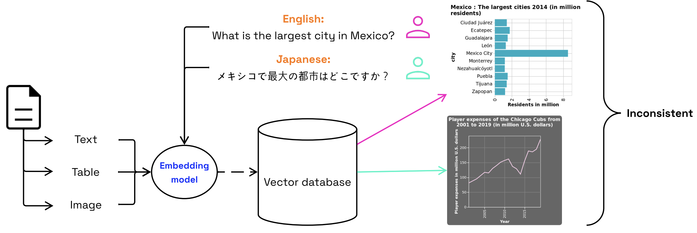
Publications
This page presents selected publications across document retrieval, open-set recognition, anomaly detection, visual question answering, adversarial robustness, visual grounding, 3D recognition, and camera calibration. The publication content from your older page has been restyled into the same modern layout as your newer homepage.
Themes
Vision, retrieval, multimodal learning, robustness
Recent Venues
NeurIPS Workshop, CVPR, ICCV
Selected Papers
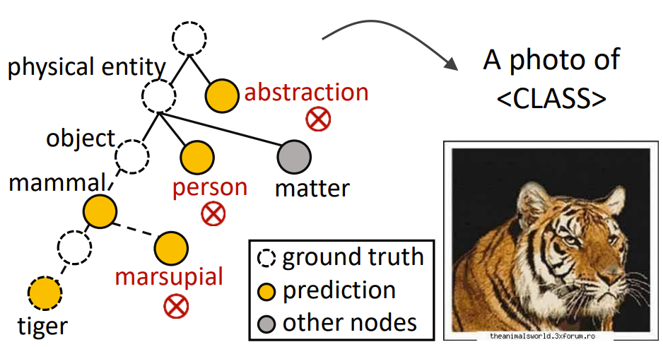
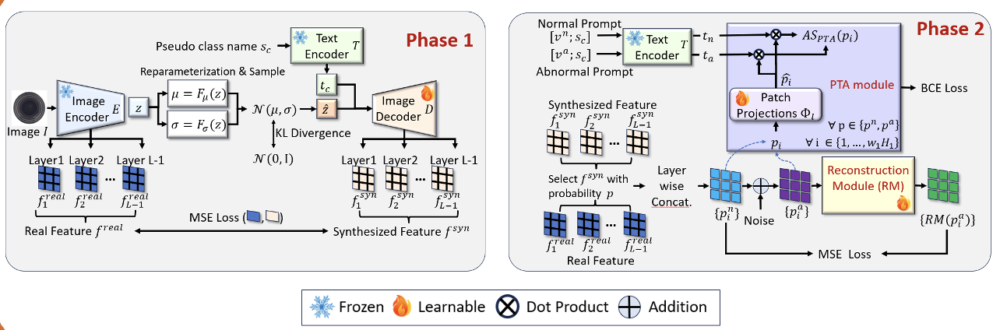
Long-Tailed Anomaly Detection with Learnable Class Names
IEEE Conference on Computer Vision and Pattern Recognition (CVPR) · Seattle, United States · 2024
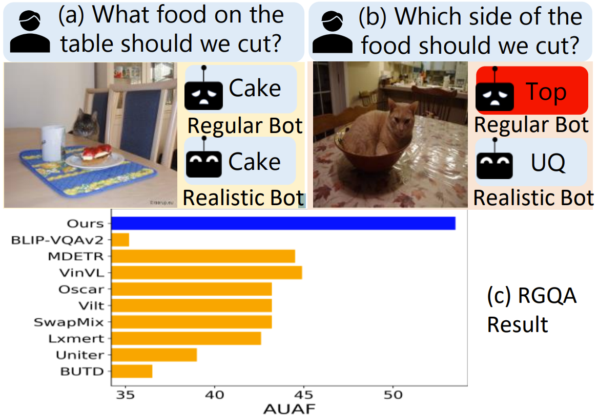
Toward Unsupervised Realistic Visual Question Answering
International Conference on Computer Vision (ICCV) · 2023
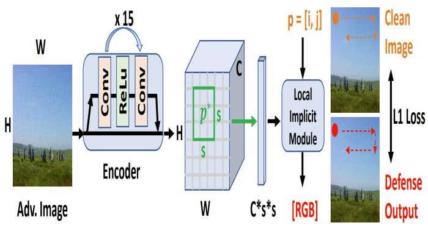
DISCO: Adversarial Defense with Local Implicit Functions
Neural Information Processing Systems (NeurIPS) · New Orleans, United States · 2022
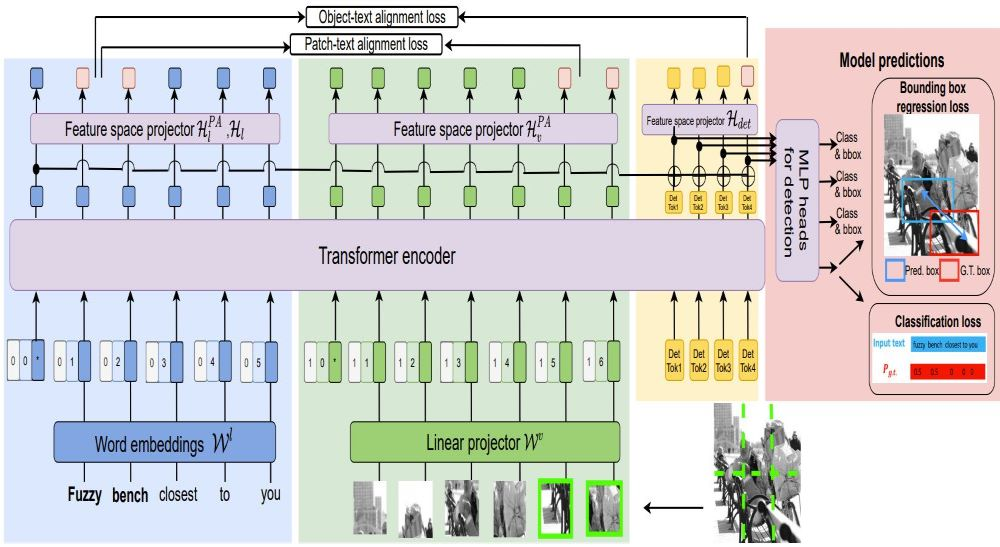
YORO - Lightweight End to End Visual Grounding
European Conference on Computer Vision Workshop (ECCVW) · Tel Aviv, Israel · 2022
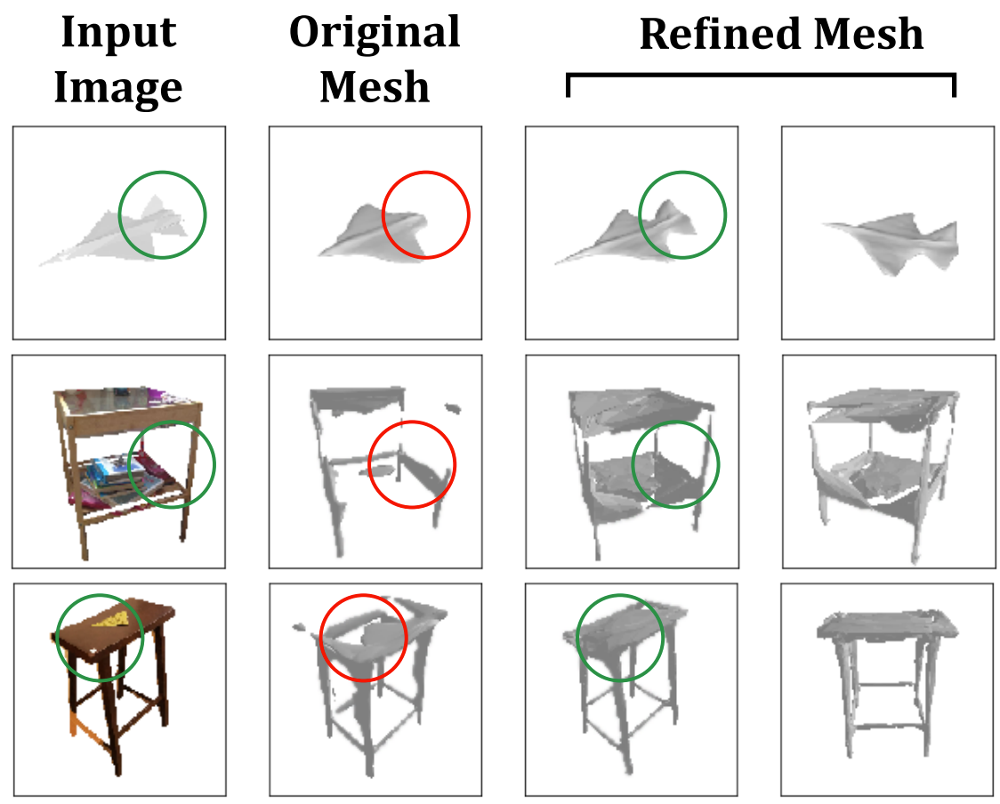
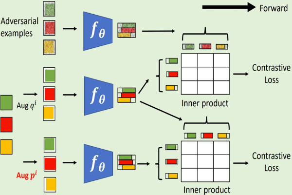
Contrastive Learning with Adversarial Examples
Neural Information Processing Systems (NeurIPS) · Vancouver, Canada · 2020 (online)
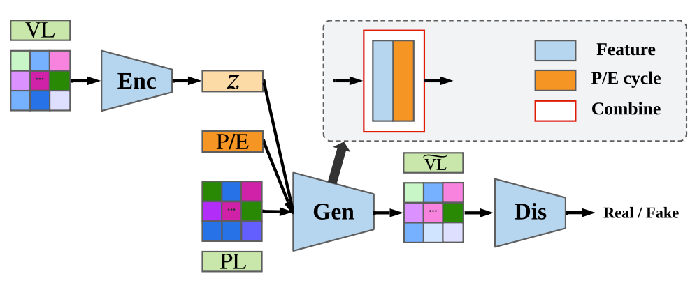
Modeling Flash Memory Channels Using Conditional Generative Nets
Design Automation and Test in Europe (DATE) · 2023

Solving Long-tailed Recognition with Deep Realistic Taxonomic Classifier
European Conference on Computer Vision (ECCV) · Glasgow, United Kingdom · 2020 (online)
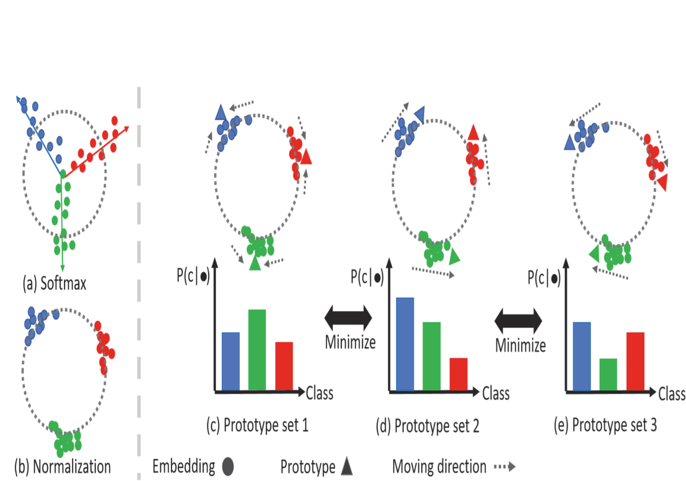
Exploit Clues from Views: Self-Supervised and Regularized Learning for 3D Object Recognition
IEEE Conference on Computer Vision and Pattern Recognition (CVPR) · Seattle, Washington, United States · 2020
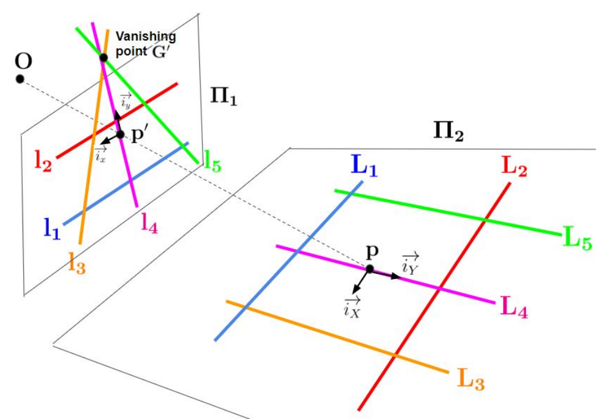
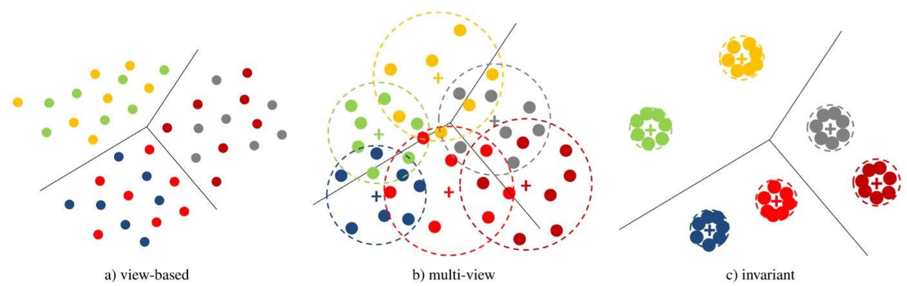
PIEs: Pose Invariant Embeddings
IEEE Conference on Computer Vision and Pattern Recognition (CVPR) · Long Beach, California, United States · 2019
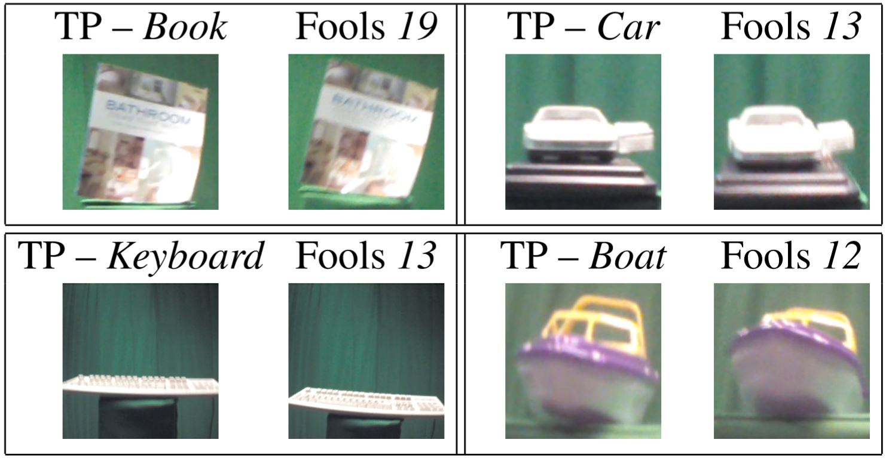
Catastrophic Child’s Play: Easy to Perform, Hard to Defend Adversarial Attacks
IEEE Conference on Computer Vision and Pattern Recognition (CVPR) · Long Beach, California, United States · 2019
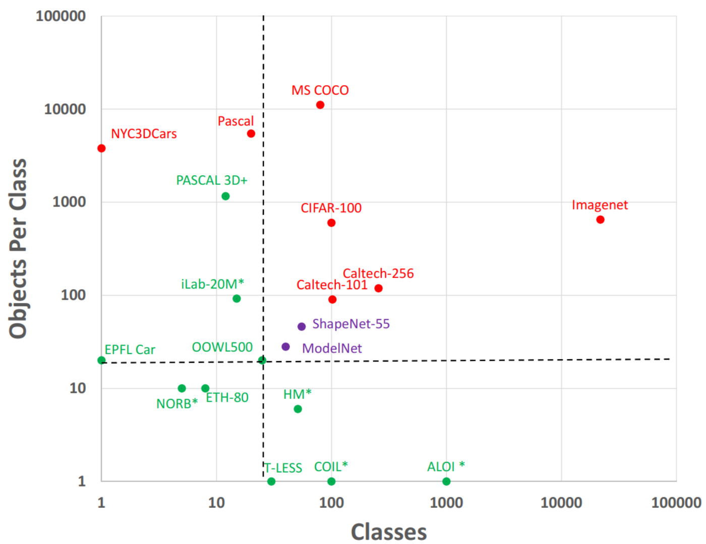
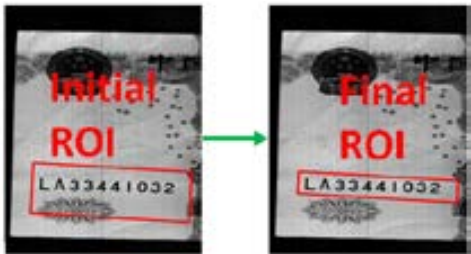
Rule-Based Optical Character Recognition for Serial Number on Renminbi Banknote
Electronic Imaging, Image Processing: Algorithms and Systems · Burlingame, USA · 2018